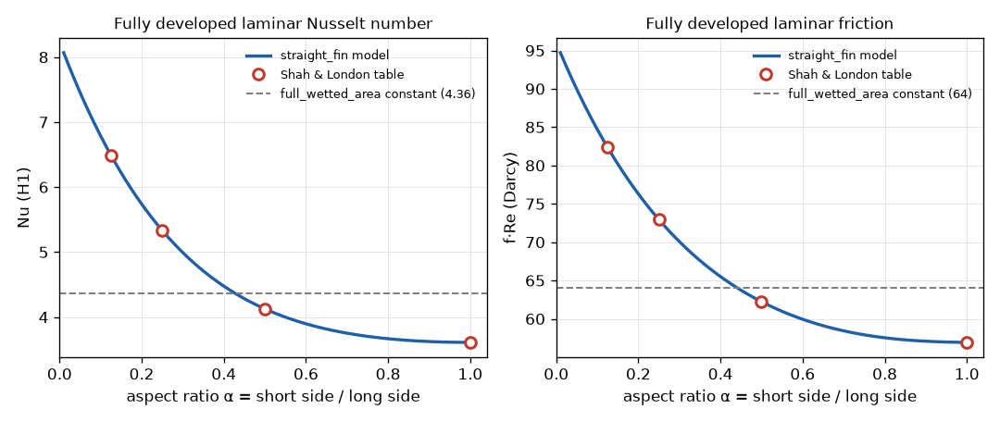
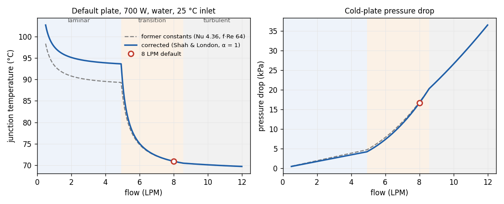
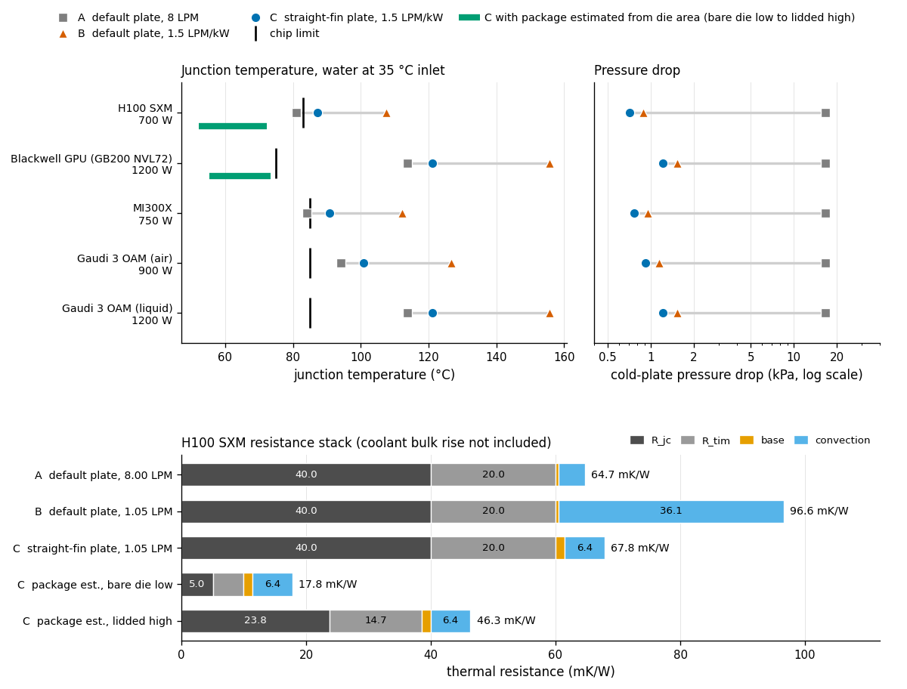

thermal-mcp-server · case study · November 2026
Does a 1D cold-plate screening model hold up at realistic flow?
thermal-mcp-server is a Python screening engine for liquid-cooled GPU cold plates, with a thin MCP interface so an assistant can run it. Its headline result looked fine: 70.9 °C for a 700 W chip. That number depended on 8 LPM through one plate, about 11 LPM per kW. Loops are commonly sized near 1.5 LPM per kW.
I checked what the model says at that flow, found two errors in the convection model, fixed both with sourced correlations, and reran the public chip cases. With the generic package resistances no chip met its limit, so I went back to the literature and estimated the package from die area instead. This page is the result, including what is still unvalidated.
Two errors in the convection model
- Circular-tube constants on rectangular channels. Laminar flow used Nu = 4.36 and f·Re = 64 at every aspect ratio. Those are round-tube values. Shah & London (1978) give Nu 3.61 and f·Re 56.9 for a square duct, rising to Nu 6.49 and f·Re 82.3 at an aspect ratio of 1:8.
- No fin efficiency. The model treated the whole wetted perimeter as if it sat at base temperature. For 0.39 mm copper fins 3.75 mm tall in water, the efficiency is 0.75.
The two errors partly cancel on a tall-fin plate, which is why neither was obvious from the output.

examples/make_figures.py.What the fix did to the default plate
The headline barely moved, from 70.90 to 70.91 °C, because at 8 LPM the default plate sits most of the way toward turbulent flow. Laminar operating points are about 4.3 °C hotter and about 11% lower in pressure drop.
The step near 5 LPM is the model's blend between laminar and turbulent correlations (Re 2300 to 4000). It was there before this work and it is not validated. Any result that lands in that band should be read with that in mind.

Reference case: five public chip cases at 1.5 LPM/kW
Water at 35 °C inlet, generic package resistances (R_jc 0.04 K/W, R_tim 0.02 K/W), three configurations per chip. I keep the generic 60 mK/W package as a conservative case; it is not a vendor value.
- A: default plate (40 channels, 1 × 1 × 80 mm) at 8 LPM.
- B: default plate at 1.5 LPM per kW.
- C: straight-fin plate (76 channels, 0.39 mm wide, 3.75 mm tall, 60 mm long) at 1.5 LPM per kW.

examples/reference_case.py and examples/make_figures.py.| H100 SXM, limit 83 °C | Flow (LPM) | Tj (°C) | Margin (°C) | ΔP (kPa) | Convection (mK/W) | Regime |
|---|---|---|---|---|---|---|
| A: default plate, 8 LPM | 8.00 | 80.9 | 2.1 | 16.59 | 4.171 | transitional |
| B: default plate, 1.5 LPM/kW | 1.05 | 107.4 | −24.4 | 0.89 | 36.067 | laminar |
| C: straight-fin, 1.5 LPM/kW | 1.05 | 87.3 | −4.3 | 0.71 | 6.374 | laminar |
- Realistic flow breaks the default plate. At 1.5 LPM/kW it is laminar, its convection resistance is 36.1 mK/W against 4.2 at 8 LPM, and every chip is 24 °C or more over its limit.
- The straight-fin plate recovers most of that. H100 comes down to 87.3 °C at 0.71 kPa. Configuration A needs 7.6 times the flow and 16.59 kPa to reach 80.9 °C.
- With the generic package, no chip meets its limit at this flow and inlet temperature, and the plate is not why. R_jc + R_tim is 60 of 67.8 mK/W in configuration C. The cold plate is the small term.
- The 1200 W cases cannot pass on any plate with the generic package. 1200 W through 60 mK/W is a 72 K rise before the plate or coolant adds anything. That says the generic resistances do not describe those parts. It does not say the parts cannot be cooled.
- The default plate only meets H100's limit by entering the transition blend. Its minimum flow is 6.61 LPM, in the unvalidated band. The straight-fin plate meets the limit at 9.77 LPM while still laminar.
The package, estimated from die area
Sixty mK/W of package was the whole story, so I reviewed the published data. No vendor publishes junction-to-case resistance for these parts. What is published is die area and the area-specific resistance of interface materials, so I built the package bottom up: die conduction, then for a lidded part an indium TIM1 and a copper lid, then TIM2 to the cold plate. Each term has a low and a high end, and I show bare die and lidded because I could not establish which these parts are.
H100 uses its 8.14 cm² die. For the Blackwell GPU I use 15.6 cm², an order-of-magnitude footprint from a published test-vehicle paper, not a measured die area. MI300X and Gaudi 3 stay on the generic package because their die area is not published. I also corrected the chip labels: the 1200 W part is the Blackwell GPU in GB200 NVL72, which NVIDIA's Blackwell datasheet lists as configurable up to 1,200 W; its 75 °C and H100's 83 °C are design values, not vendor limits.
| Configuration C, 1.5 LPM/kW | R_jc (mK/W) | R_tim (mK/W) | Sum (mK/W) | Tj (°C) | Margin (°C) |
|---|---|---|---|---|---|
| H100, bare die, low | 5.035 | 4.914 | 9.949 | 52.25 | 30.75 |
| H100, lidded, high | 23.771 | 14.742 | 38.513 | 72.24 | 10.76 |
| H100, generic, limit 83 °C | 40.000 | 20.000 | 60.000 | 87.28 | −4.28 |
| Blackwell GPU, bare die, low | 2.627 | 2.564 | 5.191 | 55.43 | 19.57 |
| Blackwell GPU, lidded, high | 12.404 | 7.692 | 20.096 | 73.32 | 1.68 |
| Blackwell GPU, generic, limit 75 °C | 40.000 | 20.000 | 60.000 | 121.20 | −46.20 |
- With the estimated package, H100 and the Blackwell GPU plausibly meet their limits on the straight-fin plate. H100 lands at 52.25 to 72.24 °C against 83 °C. The Blackwell GPU lands at 55.43 to 73.32 °C against 75 °C, with only 1.68 K left at the lidded high end.
- This is a low-confidence estimate, not a result. No vendor publishes junction-to-case resistance for these parts, I do not know whether they are lidded, die and lid thickness are my assumptions, and hotspots are not included. Hotspots would push every row up.
- The conclusion that holds is about the input, not the chips. The plate side is 7.8 mK/W. Whether a chip passes at 1.5 LPM/kW depends on a package value nobody publishes, so I show it as a band and keep the generic case beside it.
The full band, sources and arithmetic are in the package resistance review.
How the numbers were checked
- Against the source table. Nu and f·Re reproduce four Shah & London table points within 0.5%.
- Against a CFD-checked reference. The straight-fin path reproduces the 1D screen from my companion thermal-design-loop study to 1e-6 relative on eight quantities for two coolants. That screen agrees with conjugate CFD to 1.0% on average for thermal resistance.
- By hand calculation. Each physics change ships with a test that derives every intermediate value from the definitions, with the expected numbers written as literals.
- Independently. Expected values were fixed in a written brief before implementation, then re-derived by a separate standalone script that does not import the package. All matched.
- In CI. 131 tests, lint, type checks and the notebook run on every pull request. Every figure and every number on this page comes from a script in the repo.
What is still not validated
- No measured plate. Equation checks are not hardware validation. A comparison with a published skived-plate measurement is the next piece of work.
- Package resistances. They dominate the result and none is a vendor value. The generic case uses the same R_jc and R_tim for every chip. My die-area band is an estimate with low confidence: lidded or bare die is unknown, thicknesses are assumed, hotspots are left out, and two of the four parts have no die area to use.
- Chip limits. None of the junction limits I use is published by the vendor for that part. H100's 83 °C is a conservative design value and the Blackwell GPU's 75 °C is a design target I could not trace to a source.
- Fixed coolant properties. Results at 35 °C inlet use 25 °C water properties. Temperature-dependent properties and 25% propylene glycol are planned.
- The transition blend. A linear interpolation between Re 2300 and 4000, not a transition model.
- Scope. Steady state, single phase, no manifold losses, no flow maldistribution, no spreading resistance.
The model reports these limits itself. Every result carries warnings and applicability notices that name which of them apply to that operating point.
Reproduce it
git clone https://github.com/riccardovietri/thermal-mcp-server cd thermal-mcp-server uv sync --group dev uv run python examples/reference_case.py uv run python examples/make_figures.py --out docs/img uv run pytest
Full tables are in fidelity-results.md, the equations in physics.md, and the plan with its gates in work-plan.md.